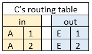

Services
The Data-Link layer is the layer below the Network Layer.
The Data-Link layer provides connectionless services to the Network Layer.
Specifically, the Data-Link layer provides the Datagram service to the Network Layer.
Connectionless Service - Datagram
Datagrams have three important properties:
- Packets are routed independently. So each packet may end up going on a very different journey to another packet...
- With datagrams, you don't need to setup a path.
- The packet contains the full source and destination address - where did the packet come from, and where is it going?
Here's an example of how the datagram service works and how routing tables work:
Figure 5.2a
Firstly, let's break down Figure 5.2a to figure out what is going on:
- The original message is broken down into 4 packets, labelled { 1, 2, 3, 4 } in square blocks on the diagram.
- Packets { 2, 3, 4 } travel on the same path (A->C->E->F)
- But packet { 1 } went on a different path (A->B->D->F). Why? Possibly due to congestion or network failures.
Let's suppose P1 wants to send a message to P2, covering the lowest weight possible:
- Being humans, it's pretty obvious how to send a message from P1 to P2 - just traverse through the nodes in an order which yields the lowest total weight.
- Unfortunately for computers it doesn't see the graph like us humans. Hence the need for routing tables.
- Luckily reading the routing table is fairly inuitive:
- Starting at table A: to get to router F, we must go through router C...
- Continue from table C: to get to router F, we must go through router E...
- Continue from table E: to get to router F, we must go through router F...
- And we have arrived at router F!
Once the message arrives at P2, it will read the MAC address of P1.
We can read a MAC address using the Address Resolution Protocol (ARP), which simply maps IP addresses to MAC addresses.
Connection-Orientated Service - Virtual Circuit
Virtual circuits have three important properties:
- Packets follow the same path.
- With virtual circuits, you must setup a path.
- Each packet contains its own vc_id.
The Multi-Protocol Label Switching (MPLS) protocol makes virtual circuits.
Here's an example of how the virtual circuit service works and how routing tables work:

Figure 5.2b
Firstly, let's break down Figure 5.2b to figure out what is going on:
- P1 and P3 both decide to send data to P2.
- Initially, both P1 and P3 have vc_id = 1
- This is because they do not know that each other exist yet, so having the same vc_id is no problem.
- When they come onto the same path at router A, the vc_id for one of the virtual circuits must change.
- We do this by just changing P3's vc_id = 2
- Then P1 and P3's virtual circuits continue on the same path towards P2.
- Reading the routing table is fairly inuitive:
- in - what was the previous router, and what was the vc_id for this virtual circuit?
- out - what is the next router, and what was the vc_id for this virtual circuit?